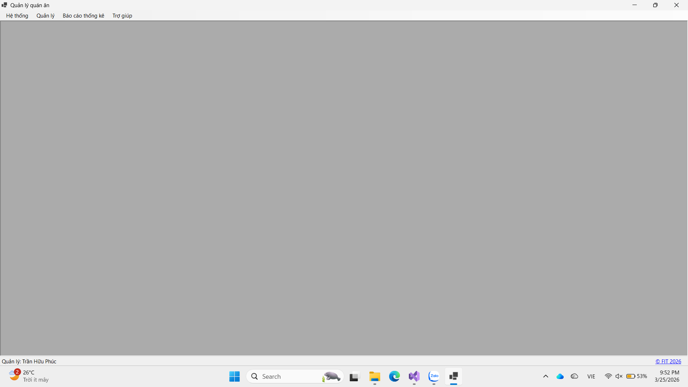

Hướng dẫn sử dụng màn hình trang chủ.

Bước 1: Nhấn chọn menu hệ thống.
Bước 2: Chọn chức năng đăng nhập, nhập thông tin và tiến hành đăng nhập. Khi muốn đăng xuất thì thực hiện tương tự và chọn mục đăng xuất. Ngoài ra còn có thể thực hiện đổi mật khẩu, đổi font, xem nhật ký và sao lưu dữ liệu.
Bước 1: Nhấn chọn menu quản lý.
Bước 2: Chọn bàn quản tạo hóa đơn, kiểm soát doanh thu.
Bước 3: Chọn các chức năng ca làm , lịch làm, bảng công để kiểm soát nhân sự.
Bước 3: Chọn các chức năng nguyên liệu, thức ăn, nhập kho đê kiểm soát giá vốn.
Bước 1: Nhấn chọn menu Báo cáo - thống kê.
Bước 2: Nhấn chọn loại báo cáo cần xem.
Bước 1: Nhấn chọn trang menu Trợ giúp.
Bước 2: Xem hướng dẫn sử dụng và thông tin phần mềm.